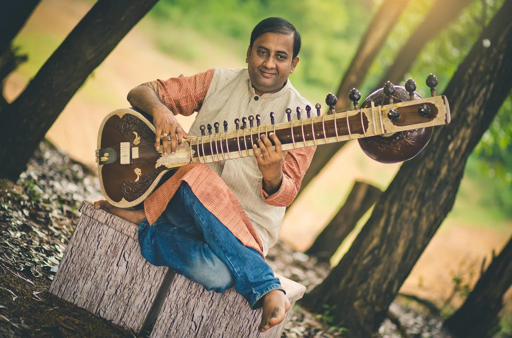

Music Production · Composition · Collaboration
Aruna Music Entertainment (AME) is a distinguished South Indian production house founded by Aruna Sivaramakrishna Rao. Rooted in artistic excellence and cultural depth, AME curates, produces, and promotes exceptional talent across India and the global stage.
At its core, AME is dedicated to creating transformative artistic experiences that transcend boundaries and bring audiences together through the timeless language of the performing arts.
To shape a refined global platform where tradition and innovation converge — elevating performing arts into immersive, world-class experiences.
AME operates at the intersection of artistry and production, offering:
Each project is approached with precision, aesthetic sensitivity, and a commitment to excellence — ensuring every collaboration reflects a distinct artistic identity.
Music composed and produced under Aruna Music Entertainment
Aruna Music Entertainment · IOAA, Austin, Texas · Music: B. Sivaramakrishna Rao
“Jai Jai Dattatreya” is a grand music and dance production celebrating the eternal quest for spiritual awakening and inner peace, presented in collaboration with IOAA (Austin, Texas).
Set against the mystical backdrop of Pushkar, Rajasthan, this large-scale production beautifully captures the spiritual essence and cultural richness of India. Featuring over 60 accomplished dancers, the performance seamlessly weaves together music, movement, and storytelling to create a visually stunning and emotionally resonant experience.
The narrative follows a young woman’s journey in search of her Guru — a soul’s pilgrimage guided by longing, devotion, and divine revelation. Drawn by a distant, soulful aalap, she encounters seekers of all kinds — some in joyful devotion, others in deep meditation or sacred dance — each illuminated by the grace of a master. When the Guru finally appears through the rising sun, she attains peace, clarity, and spiritual awakening.
Music composed by B. Sivaramakrishna Rao, blending traditional and contemporary sounds to evoke deep emotion and transcendence. Conceptualized and executive produced by Aruna Sivaramakrishna Rao.
Jai Jai Dattatreya · Siddhartha Belmannu
Aruna Music Entertainment · Invis Multimedia Pvt. Ltd., Thiruvananthapuram · 2020–2023
Geeth Govind is a landmark collaboration presenting all 24 Ashtapadis of Jayadeva in a distinctive Hindustani–contemporary musical idiom.
The Ashtapadis of Jayadeva are a collection of exquisite Sanskrit hymns from the celebrated 12th-century masterpiece, the Gita Govinda. Revered for their poetic brilliance and spiritual depth, these compositions vividly portray the divine love of Lord Krishna and his relationship with the Gopis, expressing the profound theme of divine romance and esoteric spirituality.
The Gita Govinda is structured into twelve chapters, each divided into sections known as Prabandhas. These comprise lyrical verses arranged in sets of eight couplets, traditionally referred to as Ashtapadis. Together, they form a rich tapestry of devotion, music, and poetry that has inspired generations of Indian classical arts.
The project features an evocative musical score by B. Sivaramakrishna Rao and Venkatesh D.C., bringing a fresh interpretative dimension to this timeless work. The production is further elevated through the expressive medium of Kathak, choreographed and performed by Dr. Guru Pali Chandra, seamlessly blending classical tradition with contemporary aesthetics.
Une Production Florent Paris–Berlin · Project Mère La Lumière · Music: B. Sivaramakrishna Rao · Released 13th September 2021
“Heroes’ Might — Veershakti” is a deeply evocative musical play that unfolds through intimate and powerful dialogues between a mother and her son.
At its heart lies a universal yet profoundly Indian narrative — a mother who nurtures her child with boundless love, cherishing him as her little Krishna, while simultaneously shaping him with unwavering strength, discipline, and wisdom. Through her guidance, she prepares her son to walk the righteous path of Dharma Yuddha — a path not merely of warfare, but of duty, honor, and protection.
He is molded to stand as a guardian of the sovereignty of the motherland, the sanctity of its culture and traditions, and the dignity of every living and sacred aspect of the nation. The play captures the emotional duality of motherhood — tender affection intertwined with courageous resolve — portraying how great warriors are first shaped in the hearts and homes of strong mothers.
Music composed by B. Sivaramakrishna Rao, whose compositions intricately weave emotion into every word, enhancing the narrative with depth, devotion, and intensity. Envisioned and directed by Aruna Sivaramakrishna Rao under the banner of Aruna Music Entertainment.
Project Mère La Lumière
Une Production Florent Paris–Berlin · Music: B. Sivaramakrishna Rao · Released 11th March 2021
“Jay Rang Rang” was born on the sacred evening of Ashadha Shukla Ekadashi (July 4, 2017), the day of Devashayani Ekadashi, during a deep meditative moment when the phrase emerged spontaneously — reflecting the infinite flow and colors of existence.
Weeks later, on Shravan Shukla Chaturthi (July 27, 2017) in Berlin, the complete composition unfolded effortlessly in nine stanzas, as if divinely guided. The song explores the eternal journey of life, meditation, and liberation, symbolizing the cosmic union of Shiva, Shakti, and Vishnu. “Rang” represents the divine play of creation in its many dimensions.
Music composed by B. Sivaramakrishna Rao, and rendered by R. P. Shravan and Varijashree Venugopal, the project is brought to life with the support of Aruna Sivaramakrishna Rao (Executive Producer, Aruna Music Entertainment) and choreography by Parshwanath S. Upadhye.
Presented on the auspicious occasion of Maha Shivaratri, 11th March 2021, “Jay Rang Rang” is a celebration of existence — life, death, and beyond.
Official Music Video
Behind the Scenes
Produced by Dega Arts · Music: B. Sivaramakrishna Rao · 2011
Essence of Life & The Art of Meditation is a refined conceptual production inspired by the timeless philosophy of J. Krishnamurti, thoughtfully reimagined as a deeply immersive and meditative artistic experience.
This unique work seamlessly integrates five distinguished Indian classical dance traditions — Bharatanatyam, Kuchipudi, Mohiniyattam, Odissi, and Kathak — bringing them together into a unified and harmonious expression of movement, rhythm, and introspection. Each style contributes its own aesthetic language while collectively guiding the audience through a contemplative journey of inner awareness and self-discovery.
The musical score, composed by B. Sivaramakrishna Rao, forms the soul of the production. Drawing from the essence of J. Krishnamurti’s philosophy, the original English texts have been meticulously translated into Sanskrit, with each line thoughtfully set to music.
The vocal dimension is elevated by some of India’s most celebrated artists, including Padma Vibhushan Dr. M. Balamuralikrishna, Padma Shri Hariharan, and Sanjay Abhyankar, whose exceptional renditions bring profound depth, devotion, and emotional richness to the musical narrative.
Conceptualized and executive produced by Aruna Sivaramakrishna Rao. Produced by Dega Arts, Mr. Devkumar Reddy. Presented across India, this work stands as a celebration of art, philosophy, and the meditative power of performance.
Inspired by J. Krishnamurti · Dega Arts